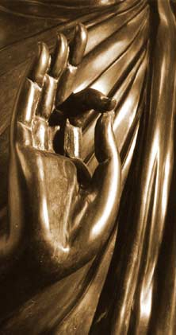

| Forest Sangha Newsletter | April 1996 |
|
Elements: The Funeral of Luang Por Jun 本考农寺坐落在一个拼图般的棕色稻田、一小片树林和几个没有开发但被照料的很好的依山族Isarn村落中间。寺庙占地25英亩，几乎敞开和布满灌木丛的土地带着一个角于很好的森林，一个池塘，和一个社区经常保持数目在36位僧人和八戒女。 本考农寺站立在一片棕色拼图般的稻田、一片林地和几个落后但整洁的依山族(Isarn)村落之间。寺院占约25英亩，大部分是开旷、布满灌木的土地。以及一片茂密树林的一角、一个池塘，一个常住僧人和八戒女人数保持在36左右的团体。 A few scattered remains in the area, dating back to the time of the Dvaravati period more than 1300 years ago, show that the place has been used as a Buddhist sanctuary for a long time. More recently, in the earlier part of this century, Luang Por Sao, one of Ajahn Mun's teachers, used to stay and practise at this same spot. And some thirty years ago the youthful Krooba Jun, returning to his home village nearby, wandered through here and hung up his glot (umbrella and mosquito net) on the site of the dilapidated brick stupa, behind the remains of an old monastery. He liked the place and stayed on. The stupa is still here today: ancient, frail, yet still shapely, listing slightly to one side under the burden of years. Around it, though, most of the sleepy environment has changed. Under Luang Por Jun's guidance villagers, monks and maechees have built up a large monastery and today Wat Beung Khao Luang is once again a thriving monastic community. 一些分散的遗址在那个区域，日子回到那时光于那Dvaravati时代多余1300年前，展示那地方曾经被用作一个佛教圣地很长的时间。就在最近，在早些部分于这个世纪，方丈梢，阿姜曼的一位老师，曾经住下和练习在这个一样的地点。并且一些3年之前那年轻的Krooba Jun，回到他的家乡在附近的，盘桓在这里并且挂他的glot（伞和蚊帐）在那地方于毁坏的砖舍利塔，后面于那遗迹于一个古老的寺庙。他喜欢那地方并且住下。那舍利塔是依然这里今天：古老的，脆弱的、依然优美。排列细长的到一边在那沉重于岁月。周围于它，然而，大部分的寂静的环境已经改变了。在方丈钧引导下的村名，僧人和八戒女已经建设了一个大的寺庙并且如今本考农寺是再一次一个兴盛的修行团体。 Three days before the ceremony Wat Beung Khao Luang is bustling with activity. A whole eight months of preparations finally come to a head. During the past months, several of Ajahn Chah's many branch monasteries have sent monks to help: over a hundred and thirty bhikkhus and more than two dozen maechees currently live here. They have been working hard to bring a number of building projects to completion in time for the ceremonies. Pickup trucks full of food and other requisites have been sent by many branch monasteries to support the community here - which has now grown to five times its usual size. The major piece of work, and the focus of all the last months' building efforts, is the artificial island that has arisen in the monastery's large pond. It is cast in concrete, completely circular and some 30 meters in diameter. Two broad and stately bridges link it to either side of the pond. The centre of the island is formed as a slightly elevated platform of two concentric steps and it is this area that will serve as the actual cremation site. Later on, after the ceremony is over, it will be used as the base of Wat Beung Khao Luang's memorial stupa for Luang Por Jun. 三天之前那典礼本考农寺嘈杂于行动。整整八个月于准备最后到了一个关键时刻。在过去的月份里，一些于阿姜查的许多分支寺院送来了僧人来帮助：超过一百三十的比丘和多过24位八戒女目前正住在这里。他们已经工作辛苦去带来许多建筑物工程区支持那个团体这里-其现在已经成长到5倍大于它的通常规模。那主要部分于工作，和那检点于所有那最后月的建筑成果，是那人造岛其已经升起在那寺院的大水池。它是铸造用水泥，完全的圆形和约30米直径。两座宽敞庄严的桥连接他到其他边于那水池。那中心于那岛被塑形如一个被轻轻举起的平台于两个同心的台阶和正是这个区域将服务作为那实际的火葬地点。以后，之后于那典礼结束，它将被用作基座于本考农寺纪念舍利塔为主持钧。 |
|
Life is unpredictable, death is certain - my dying is inevitable. 生命是无常不可预测的，死亡是确定不可避免的-我的死亡是不可避免的。 |
|
Over the last few days people have arrived in large numbers at the monastery; the trickle of pickup trucks and minibuses full of people doesn’t seem to stop. The Sangha at Wat Beung has done a great job preparing the place for the tide of visitors. All the open spaces in the monastery have been covered with a thick layer of rice straw and people simply spread their mats on the ground. Many who come here to stay for the whole five days hang their glots and the monastery gradually fills with clusters of people. Life is very much in the open, and one corner after another gets gradually taken over by scenes of colourful camping life. This is clearly not an occasion for grieving: it is a big and joyous reunion of people who gather to pay their last tribute to Luang Por Jun, and who come to listen to many of Ajahn Chah's disciples expounding the Dhamma.
那些最后的一些天人们已经到达以一个大数目在那寺庙；那车流于小型卡车和装满人的小型公共汽车看不到停止。僧团在本考农寺已经做了一个伟大的工作准备地方为了到访者的大流。所有露天的空间在那寺庙已经被覆盖由一层厚厚的水稻草杆因此人们可以简单的铺展他们的席子在那地上。许多来到这里停留过整个五天的人挂他们的伞和蚊帐因此那寺院逐渐的布满了一群群的人。人非常多在空地上，并且一个角落接着一个角落变得逐渐由五颜六色的营地景观所占据。它是显然的不是一个机会去悲痛：它是一个大型并且快乐的重聚于那些聚集起来去献上他们最后敬意到主持钧，和那些来聆听许多阿姜查弟子的佛法开示。 Rows of huts, their walls made of split bamboo sticks and carefully torn cement bags, provide shelter against the sun and serve as makeshift kitchens and free restaurants for the many thousands of visitors. A couple of shacks made of corrugated iron with water tubs serve as bathing places. Groups of people have come from all over the country having gathered food and resources to help with the catering: little pieces of cardboard show the names of the monastery they are associated with and the districts they are from. 一排排的茅屋，他们的墙是做成由分开的竹片和小心撕开的水泥袋，提供遮阴对于那太阳和作为替代厨房和免费餐厅对于那上千的来访者。一些简陋木屋做成由褶皱铁和水桶作为洗澡间。好几组人已经来自全国已经收集食物和资源去帮忙那欢迎服务：小纸片于硬纸片展示了名字于寺庙他们联系的和那区域他们来自的。 The number of monks inches up too; after the third day there are a thousand of us: too many to simply walk for alms in the next village. Before dawn, we bundle, almsbowls strapped on, into cars and pickup trucks. Daily there is a fleet of local drivers, waiting to take us through the crisp morning air, to different towns and villages of the surrounding area for pindabat. 那数目于僧人也在不断增加；第三天之后那里有一千位：太多以至于无法走去托钵在那下一个村落。黎明之后，我们包好，钵扎好，走进汽车和运货车。每天那里有一队当地司机，等待带我们通过清新的早晨空气，到不同的城镇和村落于那周围的区域为了托钵。 The Sala at Wat Beung is a large, T-shaped building, some 30 meters wide and a good 60 meters long: whitewashed stonewalls, large windows, and a grey asbestos roof with its red metal frame showing on the inside. Front centre, above the monks' platform, is a sizeable Buddha statue against the mural colourfully painted landscape. What really catches the eye, though, is the shrine just to the left of centre of the room: a beautifully painted portrait of Luang Por Jun amongst flowers, and the ornately carved red and gold coffin where his body lies in state, carefully covered in tea and tobacco leaves to prevent decomposition. Mounted on boards are several photographs of his quiet and peaceful features, taken shortly after he died. A caption in Pali reads: "Life is unpredictable, death is certain - my dying is inevitable". A few visitors come up, quietly pay their respects and, after a moment's sitting, leave again in silence. 大厅在本考农寺是一个大的，T形的建筑，约30米宽和一个刚好60米长：白灰刷的石墙，大的窗户，和一个灰色的石棉屋顶带着它的红色金属构架展现在里面。前面的中心，上面于那僧人的讲台，是一个相当大的佛像面对着那壁上的色彩缤纷的描绘的背景。什么真正吸引眼球的，然而，是那供龛正好在那左边于房间的中心：一个美丽的油漆的肖像于主持钧在花朵之中，和那装饰的雕刻的红和金色灵柩那里他的身体平躺着，小心的覆盖着用茶和烟草叶以免腐烂。峰在板上是一些照片于他的安详平静的相貌，快速拍的在他去世不久。一个说明文字用巴利语写道：“生命无常，死亡无疑-我的死亡是不可避免的。”一些到访者走上来，安静的致敬而后，在片刻的坐后，又离开在安静中。 |
|
A few days later, the same Sala is one whole sea of bodies - waves of bowing monks and nuns ceremonially take leave from Ajahn Jun and, one last time, ask for his forgiveness - which his unmistakable tape-recorded voice poignantly bestows upon us. The coffin is then raised from the shrine in the Sala, and sixteen shaven and white-clad men carry it to the pyre on the island. It is followed by the four-fold community, and the whole procession moves slowly on its way through the monastery, past thousands of people who wait in the open under the scorching sun, while an unruly breeze barges its way to the fore and stirs up clouds of dust and ruffles the flags posted along the path.
一些天之后，那同一个大厅是一个整个海洋于身体-波浪于顶礼的僧人和修女仪式性的告别主持钧和，最后一次，请求他的原谅-他毫无疑问的录音声音沉痛让我们。灵柩这时被抬起从那供龛在那大厅，16为剃光头的白衣男士抬着它到那火葬柴堆在那岛上。跟随者的是四众弟子，和那整个队伍移动缓慢在它的路通过那寺院，经过成千的人其等在那开阔的场地在那酷热的太阳下，此时一个任性的风冲到前面并且搅其灰尘的云并且掣动那旗帜展在一路上的。 During the week there is a full schedule of meditation sessions through the day, along with the regular morning and evening chanting. After night-fall, everybody gathers under canvas roofs on the farther and slightly elevated side of the pond. The island with the pyre and the walkways are lit up by a maze of lanterns, which illuminate the night and reflect themselves upon the water. The Puja ends with the sound of squeaky samanera voices hurrying through their daily recitations; then the nights are given to Dhamma talks. As the wind gathers momentum, monks wrap themselves in their outer robes and people sit huddled in blankets while all listen to the cicadas and the Dhamma desanas - some in Thai, many in Isahn dialect, none in English - far into the night. 在那星期那里是一个满的日程表于打坐集会贯穿那天，一起的有那早上和晚上唱诵。之后于夜幕降临，每一个人聚集下面于帆布屋顶在那远一点和轻微抬高点的边于池塘。那岛带着那火葬柴堆和那通道是被点亮由迷宫似的灯笼，其点亮了那夜晚和反射它们自己在水上。那礼拜结束于那声音于嘈杂的沙弥声音匆忙的通过它们的日常背诵；这时那晚上呗给予法的开示。正如风聚集动能，僧人包裹他们自己在他们的外袈裟和人们坐在挤在毯子上此时听那蝉声和那法的开示-一些用泰语，许多用依山族方言，没有用泰语的-一直到那夜晚。 The burning of the body takes place on full-moon night of February the 4th. During that afternoon, once the entire assembly has gathered and has settled itself in place, a few limousines pull up and a delegation of smartly uniformed, official-looking people processes to the base of the pyre, where one of them lights a small torch. A little further up from there, on top of two steps, lies the coffin in a small but colourful wooden and polystyrene structure (brazenly cheerful and looking remarkably like an oversized birdhouse). The people who have assembled around the pond try to follow the distant proceedings on the island. They listen to the announcements and bask in the ocean of goodwill that such grand gatherings of the Buddha's disciples engender. Between meditation and chanting folks disperse for a quick bath and a cup of tea or a Pepsi before the sun sets. Night falls rapidly, and after Luang Por Sumedho's talk the monks walk over to the island where a gigantic umbrella hangs suspended a few metres above the brightly lit bier. It sways in the evening breeze, its white cloth lining swelling and ballooning. Beneath it a few final, hasty preparations are going on. There is a sudden and unmistakeable smell of diesel in the air and, shortly before ten o-clock, smoke begins to erupt from under the funeral canopy where the actual furnace is hidden. The pyre is burning. Minutes later, under scrupulous control, the decorated polystyrene awnings and the majestic umbrella have caught fire and have gone spectacularly up in flames. Meanwhile, the moon has risen and the Sangha is standing as close to the fire as heat and smoke will allow. The fire-element is at work with all its fury - and Ajahn Jun's body goes on its final journey. 遗体的火化发生在一个满月夜在2月4日。在那个下午，一旦那整个机会已经聚集并且安置他们自己到位，一些小轿车停下和一个代表团于整洁的制服，看起来很正式的人进程到那基座于火葬柴堆，那里其中之一他们点燃了一个小火炬。不远处从那里，两个台阶之上，放那灵柩在一个小但是彩色的木质和聚苯乙烯塑料结构（无耻愉悦的和看起来与众不同的像一个巨大的鸟窝）。人们谁已经集合周围于那池塘尝试去跟随那远远的进程在那岛上。他们听到那通知并沐浴于善意的海洋其这样宏伟聚集于佛陀的信徒情感。之间于静坐和唱诵亲属分支驱散为了一个快速沐浴和一杯茶或者一瓶百事可乐之前于太阳落山。夜幕降临的很迅速，之后于阿姜苏美多的演讲僧人们走过去那岛其一个巨大的伞悬挂着悬浮在一些米高于那光亮的明亮的灵柩。它摇晃着在那夜晚的微风里，它的白色布条纹的波浪起伏和膨胀。下方于它一些最后，匆忙的准备正在进行。那里是一个突然和易识别的味道于柴油在空气里和，短暂的之前于10点中，烟开始喷出从下面于那丧礼华盖哪里那实际火炉被隐藏。那火葬柴堆正在燃烧。几分钟之后，在谨慎控制下，那装饰的聚苯乙烯遮阳棚和那雄伟的伞着火和已经去扣人心弦的烧毁在火焰中。与此同时，那月亮已经升起和那僧团正站立非常靠近那火在热度和烟雾所允许的最近距离。那火元素在工作用所有它的愤怒--住持钧的遗体走上了他的最后旅程。 |  |
|
My thoughts turn to some of the forms and the symbols around elements, stupas and cremation places. In Thai language, the expression for 'crematory' (mehn) is borrowed from Sanskrit. The same word, pronounced a little differently, is also the name for Meru - the mythical mountain which in Buddhist cosmology holds together the four great continents and forms the centre of the universe. It is this image of Mt Meru that is echoed by the shape of stupas throughout the Buddhist world. Some of the lower parts of a traditional stupa symbolise the four great elements of fire, water, earth and air; and the entire edifice can be seen as an image of the relationship between the conditioned and the unconditioned realm. The theme of the identity between Meru, the mythical mountain and the burning place - mirrored so clearly by Thai language - is often taken up by Buddhists in quite a literal way: the burning place for Luang Por Jun's body is set up on the foundations of the stupa which will arise on this island in the middle of the pond. The allegory is thus.
我的思绪转向一些那形式和符号围绕着元素，舍利塔和火葬的地点。在泰语里，那表达为了“火葬”(mehn)是借来从梵语。同样的词，发音有一点不同，也是那名字于Meru-那神话的山其在佛教宇宙观抓住一起拿四大陆和形成那中心于那宇宙。这是这个图片于Mt Meru是被模仿由那形状于舍利塔贯穿佛教世界。一些那低一点的部分于一个传统的舍利塔代表那四大元素于火水地和风；和那整个宏伟建筑可以被看做一个雕像于那关系之间于那被制约的和未被制约的领域。那主体于那本质之间于Meru，那神话的山和那燃烧的地方-映照的如此清晰由泰语-被经常提起被佛教徒在十分精确的方式：那燃烧的地方为了主持钧的身体是布置在那基座于那舍利塔其将升起在这个岛在那中间于那水池。那象征是这样。 Shortly after midnight I clamber up to the fire. The decorations and the finery have all burnt down. The row of intently gazing faces, of monks and tiny novices packed together around the open burning-chamber, are painted a fierce orange. The body lies there in the blaze: charred flesh and bones, but recognizable clearly enough as a human frame to drive home the knowledge that this is not just a world of metaphors. 短暂的之后于中夜我登上去到那火。那装饰和那美丽的装饰已经全部烧毁的。那一排排专注的凝视的脸，于僧人和小沙弥挤在一起围绕着那开放的燃烧着的空间室，被画成了重重的橘色。那身体躺在那里在那火焰中：烧焦的肉和骨头，但是被认出清晰的足够作为一个人类轮廓去带回家那知识其这不是一个隐喻的世界。 On the next morning, the light of dawn bathes the empty patches of rice straw in pink hues. People are packing their bags and rolling up their mats. After a cup of hot chocolate, monks, a few maechees and layfolk gather on the island and cluster around what is now a naked steel brazier with ashes and still glowing charcoal. Three of the elder monks of Wat Pah Pong carefully sift the remains of the fire, pick out pieces of bone and place them on cloth-covered receptacles standing by the side. I am moved by the whole experience of these last few days. In contrast to the solemn and institutionalised efficiency of other funerals, Luang Por Jun is seen through all this by friends - they preserve his body, build him a crematory, arrange a memorable ceremony for all those whose lives have been affected by him, burn his body carefully through a whole night and finally sift through the ashes to collect his few remains. How much more can friends do? 第二天早晨，光于清晨沐浴了那空片于那水稻杆在桃红的色调。人们正在打包他们的包裹和卷他们的席子。之后于一杯热巧克力，僧人，一些八戒女和居士聚集在那岛和聚集围在什么是现在一个裸露的钢盆带着灰烬并且依然发光的碳。三位年长僧人于本考农寺小心的检查那废墟于那火焰，挑出片片的骨头和放他们在布包好的容器立在一边。我被感动于那整个经验于这些最后的几天。对比着那庄重的和制度的效率于其他葬礼，主持钧被看着通过所有这些被朋友们-他们保护她他遗体，建造为他一个火葬场，安排一个难忘的仪式为了所有那些生命被影响由他，火化他的遗体通过一个整夜和最后详查过那灰烬去收集他的一些遗留。有多少更多朋友们能做的？ A little further away, under the communal tent is the sight of empty rows of chairs. People bundle their belongings onto pickup trucks, and exchange goodbyes with hands folded in anjali. Cars full of smiling faces pull out of the monastery. A small boy walks by, clutching Luang Por Jun's biography. The island now stands empty, the base in the middle awaiting the stupa, the yet invisible descendant of Mt. Meru, which will enshrine Luang Por Jun's physical remains. But as I pack my bowl and roll up my mosquito net, I reflect that it is the Sangha and the thousands of laypeople slowly filing away that house his true remains the down-to-earth, humorous and practical approach to the Deathless with which he has inspired so many. 一点未来，之下于那公共的帐篷是那景象于空的一排排椅子。人们捆扎他们的物品上载物货车，并且互换再见用手合十。车子满是笑容的驶出寺院。一个小男孩经过，手抓着主持钧的传记。那岛现在立着空空的，那基座子啊中间等待着那舍利塔，那尚无法看见的后代于Meru山，其将珍藏主持钧的遗骨。但是当我拿起我的钵和卷起我的蚊帐，我反省到它是那僧团和那数千的居士缓慢档案出那房子他的真遗产那实际的，幽默的和实用的方法去那不死的同其他已经被激励这么多。 |